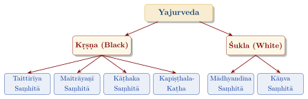
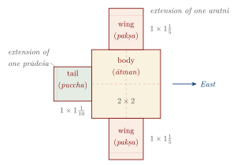
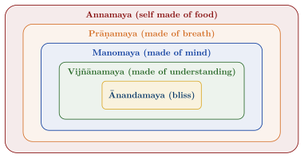
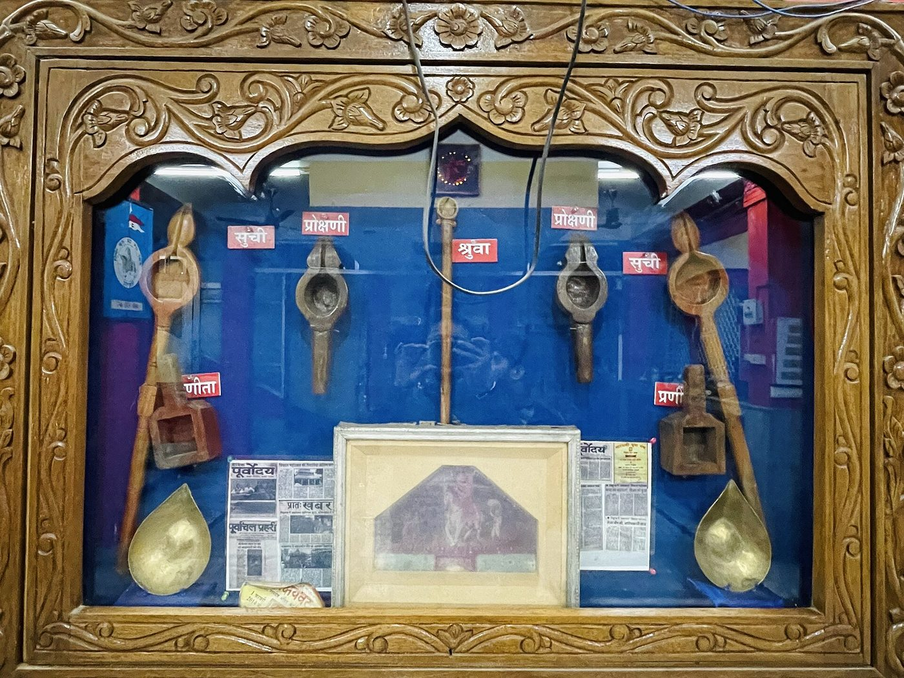

Chapter 3: The Yajurveda: The Veda of Sacred Ritual¶
Invocatory Verse
iṣe tvorje tvā vāyava sthopāyava stha
devo vaḥ savitā prārpayatu śreṣṭhatamāya karmaṇe
For food thee, for strength thee! You are winds, you are near-goers.
May the god Savitṛ impel you to the best of works.
— Taittirīya Saṃhitā 1.1.1.1 (cf. Vājasaneyi Saṃhitā 1.1)
3.1 Introduction to the Yajurveda¶
The Yajurveda (yajus, “sacrificial formula” + veda) is the Veda of ritual action. If the Ṛgveda is the Veda of praise and the Sāmaveda that of chant, the Yajurveda is the Veda of the yajña itself. It supplies the formulas (yajus) muttered by the adhvaryu, the priest who carries out the physical work of the sacrifice: measuring the ground, building the altars, kindling the fires, handling the implements and pouring the oblations. Its formulas accompany each step, from the cutting of grass for the altar to the final bath.
Unlike the Ṛgveda, which is entirely in verse, the Yajurveda contains much prose, both in the formulas themselves and in the explanatory passages of the Black Yajurveda. These explanations are the oldest Indian expository prose. The Yajurveda Saṃhitās belong to the period after the Ṛgveda—their mantras probably to c. 1200–900 BCE and the prose of the Black Yajurveda to c. 900–800 BCE (Table 1.2)—and reflect the elaboration of the śrauta ritual in the Kuru–Pañcāla realm (Witzel 1997; Gonda 1975).
Key Characteristics of the Yajurveda
-
Contains both verses (many taken from the Ṛgveda) and prose formulas (yajus)
-
Exists in two branches: the Black (Kṛṣṇa) and the White (Śukla)
-
Serves as the liturgical handbook of the adhvaryu priest
-
Its Black recensions contain the earliest Indian prose explanations of ritual
-
Includes the Īśā Upaniṣad (White) and is linked to the Kaṭha, Taittirīya, Bṛhadāraṇyaka, Śvetāśvatara and Maitrī Upaniṣads
3.2 The Two Branches: Kṛṣṇa and Śukla¶
3.2.1 Kṛṣṇa Yajurveda (Black Yajurveda)¶
The Black Yajurveda is the older branch. Its Saṃhitās mix the formulas with prose explanations of the kind later collected in separate Brāhmaṇas. The name “Black” is usually explained by this “mixed” or “unclear” arrangement, though its origin is uncertain. Four Saṃhitās survive:
-
Taittirīya Saṃhitā — the best known and most widely recited; dominant in South India.
-
Maitrāyaṇī Saṃhitā — preserved by a small community in Gujarat and Maharashtra; linguistically one of the older Yajurveda texts.
-
Kāṭhaka Saṃhitā — of the Kaṭha school, once strong in Kashmir and the north-west; also archaic in language.
-
Kapiṣṭhala-Kaṭha Saṃhitā — closely related to the Kāṭhaka; preserved only in part.
3.2.2 Śukla Yajurveda (White Yajurveda)¶
The White Yajurveda presents the formulas on their own, “clear” of explanation; the explanations are collected in a separate and very large Brāhmaṇa, the Śatapatha. Its Saṃhitā, the Vājasaneyi Saṃhitā, survives in two closely related versions (Figure 3.1):
-
Mādhyandina — prevalent in North and Central India.
-
Kāṇva — found mainly in Maharashtra, Karnataka, Tamil Nadu and Odisha.

3.3 The Legend of Yājñavalkya¶
A Purāṇic story (Viṣṇu Purāṇa 3.5) explains the origin of the two branches. Yājñavalkya, a pupil of Vaiśampāyana, quarrelled with his teacher, who demanded that he give back what he had learnt. Yājñavalkya vomited the formulas; the other pupils, taking the form of partridges (tittiri), picked them up—hence the name Taittirīya, and the “Black” (soiled) Yajurveda. Yājñavalkya then worshipped the Sun, who appeared to him in the form of a horse (vājin) and taught him new, “White” formulas—hence the name Vājasaneyi.
The story is a folk etymology, but it reflects a real difference between the two branches and the importance of Yājñavalkya, who is the central figure of the Śatapatha Brāhmaṇa’s later books and of the Bṛhadāraṇyaka Upaniṣad. The law book Yājñavalkya Smṛti (c. 4th–5th century CE) is also ascribed to him, though it is centuries later.
3.4 Contents of the Vājasaneyi Saṃhitā¶
The Mādhyandina Vājasaneyi Saṃhitā has forty chapters (adhyāyas). The first eighteen contain the formulas for the main śrauta rituals in roughly the order of their performance; the later chapters are supplementary, and the last is the Īśā Upaniṣad (Table 3.1).
| Chapters | Subject | Description |
|---|---|---|
| 1–2 | Darśapūrṇamāsa | New- and full-moon sacrifices |
| 3 | Agnihotra, Cāturmāsya | Establishing the fires; daily and seasonal offerings |
| 4–8 | Soma sacrifice | The Agniṣṭoma and related rites |
| 9–10 | Vājapeya, Rājasūya | Royal and “drink of strength” rites |
| 11–18 | Agnicayana | Piling of the great fire altar; includes the Śatarudrīya (16) |
| 19–21 | Sautrāmaṇī | A rite with offerings of surā |
| 22–25 | Aśvamedha | The horse sacrifice |
| 26–29 | Supplements | Additional formulas |
| 30–31 | Puruṣamedha | The “human sacrifice” (symbolic in the Śatapatha); the Puruṣa Sūkta (31) |
| 32–34 | Sarvamedha and others | Including the Śivasaṃkalpa verses (34.1–6) |
| 35 | Pitṛmedha | Funeral rites |
| 36–39 | Pravargya | The rite of the heated milk-pot |
| 40 | Īśā Upaniṣad | Philosophical conclusion |
3.4.1 The Īśā Upaniṣad¶
The fortieth chapter is the Īśā (or Īśāvāsya) Upaniṣad, one of the shortest and most quoted Upaniṣads:
Īśā Upaniṣad 1
īśā vāsyam idaṃ sarvaṃ yat kiñca jagatyāṃ jagat
tena tyaktena bhuñjīthā mā gṛdhaḥ kasya svid dhanam
All this, whatever moves in this moving world, is to be dwelt in by the Lord.
Enjoy it by renouncing it; do not covet anyone’s wealth.
— Īśā Upaniṣad 1
The verse combines the presence of the Lord in all things with an ethic of non-possessiveness. The Upaniṣad’s later verses on “knowledge” and “ignorance” (vv. 9–11) were read by Śaṅkara and other commentators in very different ways.
3.5 Contents of the Taittirīya Saṃhitā¶
The Taittirīya Saṃhitā is divided into seven books (kāṇḍas) with 44 chapters (prapāṭhakas). Each book mixes formulas and explanation; the main topics are (Table 3.2):
| Kāṇḍa | Prapāṭhakas | Main Topics |
|---|---|---|
| I | 8 | Formulas for the new- and full-moon sacrifices, the Soma sacrifice, Vājapeya and Rājasūya |
| II | 6 | Optional (kāmya) offerings for particular wishes |
| III | 5 | Supplements to the Soma sacrifice |
| IV | 7 | Formulas for the Agnicayana, including the Śatarudrīya (4.5) and the Camaka (4.7) |
| V | 7 | Explanation of the Agnicayana |
| VI | 6 | Explanation of the Soma sacrifice |
| VII | 5 | Soma sessions and the Aśvamedha |
3.6 Comparison of the Two Branches¶
Table 3.3 compares the two branches.
| Feature | Kṛṣṇa Yajurveda | Śukla Yajurveda |
|---|---|---|
| Arrangement | Formulas and explanations mixed | Formulas in the Saṃhitā; explanations in the Śatapatha Brāhmaṇa |
| Relative age | Older | Younger; more systematic |
| Surviving Saṃhitās | Four (Taittirīya, Maitrāyaṇī, Kāṭhaka, Kapiṣṭhala) | One (Vājasaneyi, in two versions) |
| Region today | South India (Taittirīya) | North India (Mādhyandina); Maharashtra and the South (Kāṇva) |
| Brāhmaṇa | Taittirīya Brāhmaṇa (supplementing the Saṃhitā) | Śatapatha Brāhmaṇa |
| Upaniṣads | Taittirīya, Kaṭha, Śvetāśvatara, Maitrī | Īśā, Bṛhadāraṇyaka |
3.7 Key Mantras and Their Use¶
3.7.1 The Śrī Rudram and Camakam¶
The Śatarudrīya or Śrī Rudram (Taittirīya Saṃhitā 4.5; Vājasaneyi Saṃhitā 16) belongs to the Agnicayana, where it pacifies the dangerous god Rudra. It is a long litany of salutations to Rudra in his many forms, terrible and benign, as lord of animals, of forests, of thieves and of healers:
Śrī Rudram — Taittirīya Saṃhitā 4.5.2
namo hiraṇyabāhave senānye diśāṃ ca pataye namo
namo vṛkṣebhyo harikeśebhyaḥ paśūnāṃ pataye namo
Homage to the golden-armed leader of hosts, and to the lord of the quarters, homage!
Homage to the green-haired trees, to the lord of beasts, homage!
The Camaka (Taittirīya Saṃhitā 4.7) is a list of requests, each followed by ca me (“and for me”). Together they form the core of the Rudrābhiṣeka, still widely performed in Śiva temples.
3.7.2 The Puruṣa Sūkta in the Yajurveda¶
The Puruṣa Sūkta (RV 10.90; Section 2.5.3) recurs in Vājasaneyi Saṃhitā 31, where it belongs to the Puruṣamedha, and in Taittirīya Āraṇyaka 3.12, in both cases with additional verses.
3.7.3 The Mahānārāyaṇa Upaniṣad¶
The tenth book of the Taittirīya Āraṇyaka, known as the Mahānārāyaṇa Upaniṣad, contains many verses and formulas used in later worship, including the Durgā Sūkta and the Medhā Sūkta.
3.8 The Central Role of Yajña¶
The word yajña comes from the root yaj, “to worship (with offerings)”. In the Vedic understanding the sacrifice was not merely a ceremony but an act that sustained the order of the world, and the Puruṣa Sūkta presents the first sacrifice as the origin of all things:
The First Sacrifice
yajñena yajñam ayajanta devās
tāni dharmāṇi prathamāny āsan
With the sacrifice the gods sacrificed to the sacrifice;
these were the first ordinances.
— Ṛgveda 10.90.16
The śrauta rite was carried out by four principal priests, each linked with one Veda—the hotṛ with the Ṛgveda, the adhvaryu with the Yajurveda, the udgātṛ with the Sāmaveda and, by a later claim of the Atharvavedic schools, the brahman with the Atharvaveda—each with three assistants in the Soma sacrifice (Section 8.3, Figure 8.2).
3.9 Classification of Yajñas¶
Vedic rites can be classified in several overlapping ways: as domestic (gṛhya, performed in the household fire) or solemn (śrauta, performed with three fires and professional priests); as obligatory, occasional or optional; and, in a traditional scheme, as seven “cooked” offerings (pākayajña), seven oblation sacrifices (haviryajña) and seven Soma sacrifices (Table 3.4).
| Category | Examples | Description |
|---|---|---|
| Nitya (obligatory) | Agnihotra; daily sandhyā | Performed regularly |
| Naimittika (occasional) | Life-cycle rites such as jātakarma | Performed on particular occasions |
| Kāmya (optional) | Putreṣṭi (for a son) | Performed for a particular wish |
| Haviryajña | Agnihotra, Darśapūrṇamāsa, Cāturmāsya | Offerings of milk, ghee, grain and cakes |
| Somayajña | Agniṣṭoma, Vājapeya | Rites involving the pressing of Soma |
| Royal rites | Rājasūya, Aśvamedha | Consecration and assertion of sovereignty |
The principal rites—the new- and full-moon offerings, the Agniṣṭoma, the royal consecration and the horse sacrifice among them—are described step by step in Chapter 8, which treats the śrauta ritual as a system.
3.9.1 The Three Fires and Animal Sacrifice¶
A householder who wished to perform śrauta rites first “established the fires” (agnyādheya): the round gārhapatya (householder’s fire) in the west, the square āhavanīya (offering fire) in the east, and the semicircular dakṣiṇāgni (southern fire). Many śrauta rites included the sacrifice of animals—above all goats, but also cattle and, in the Aśvamedha, a horse—whose portions were offered and eaten. The texts do not hide this; the Śatapatha Brāhmaṇa discusses it at length and already shows unease about the killing, for instance in its rite of “quieting” the victim and its story of Bhṛgu’s vision of the other world, in which beings take revenge on those who consumed them in this one (ŚB 11.6.1). Criticism of animal sacrifice by Buddhists and Jains, and the growing ideal of non-violence (ahiṃsā) within Brahmanical tradition itself, led over the following centuries to the replacement of animal victims by vegetable substitutes in most ritual practice.
3.10 The Agnicayana: Building the Fire Altar¶
The Agnicayana, the “piling of Agni”, is the most elaborate rite described in the Yajurveda; its formulas fill Vājasaneyi Saṃhitā 11–18 and Taittirīya Saṃhitā 4–5, and its explanation occupies Books 6–10 of the Śatapatha Brāhmaṇa. A great altar, usually in the shape of a bird of prey (śyena), is built (Figure 3.2) of about a thousand fired bricks in five layers over many days (Table 3.5).
| Feature | Specification |
|---|---|
| Area | \(7\frac{1}{2}\) square puruṣas (one puruṣa = the height of the sacrificer with arms raised) |
| Layers | 5 |
| Bricks | about 1,000 (200 in each layer), in shapes and sizes prescribed so that joints do not coincide between layers |
| Shape | A bird with body, outstretched wings and tail, facing east |
| Special bricks | Three naturally perforated stones (svayamātṛṇṇā) in the first, third and fifth layers |
The Śatapatha Brāhmaṇa interprets the altar as the body of Prajāpati, reassembled after creation, and as the year. It identifies the first, third and fifth layers with earth, atmosphere and sky, and the second and fourth with the regions between; and it correlates numbers connected with the altar with the 360 days and the 10,800 muhūrtas (\(360 \times 30\)) of the year (Table 3.6).
| Element | Sanskrit Term | Description and Interpretation |
|---|---|---|
| Bird-shaped altar | Śyenaciti | The altar as a bird that carries the sacrificer to heaven |
| Perforated stones | Svayamātṛṇṇā | Laid in the first, third and fifth layers; identified with the three worlds |
| Fire-pan | Ukhā | The clay pot in which the consecrated fire is carried for a year before the piling; likened to a womb |
| Golden man | Hiraṇmaya puruṣa | A small gold figure laid in the foundation, identified with Prajāpati |
| Lotus leaf | Puṣkaraparṇa | Laid beneath the golden man; represents the primordial waters |

The Agnicayana has survived as a living tradition among the Nambūdiri Brahmins of Kerala; their performance at Panjal in 1975, documented by Frits Staal and his colleagues, is described in Section 8.10.
3.10.1 The Mathematics of the Altar¶
Building altars of exact shape and area, and enlarging them in fixed proportions, required practical geometry, which is codified in the Śulba Sūtras (Chapter 7). The problems addressed include constructing squares and rectangles of given area, transforming a square into a circle of (nearly) equal area and back, and combining or subtracting squares. For these purposes Baudhāyana states the diagonal theorem:
dīrghacaturasrasyākṣṇayārajjuḥ pārśvamānī tiryaṅmānī ca
yat pṛthagbhūte kurutas tad ubhayaṃ karoti
The diagonal rope of a rectangle produces both [areas] that its length and its breadth produce separately. — Baudhāyana Śulba Sūtra 1.12
Babylonian scribes used the same relation, and lists of Pythagorean triples, more than a thousand years earlier; Baudhāyana’s is among the earliest general statements of it to survive, and it predates any surviving Greek proof.
The Baudhāyana and Āpastamba Śulba Sūtras also give a rule for the diagonal of a square, that is, for \(\sqrt{2}\) times its side:
pramāṇaṃ tṛtīyena vardhayet tac caturthenātmacatustriṃśonena saviśeṣaḥ
Increase the measure by its third, and this by its own fourth less its thirty-fourth part; [the result is] the one with an excess. — Āpastamba Śulba Sūtra 1.6; cf. Baudhāyana 2.12
That is, \(\sqrt{2} \approx 1 + \frac{1}{3} + \frac{1}{3 \times 4} - \frac{1}{3 \times 4 \times 34} = 1.4142156\ldots\), compared with the true value \(1.4142135\ldots\): correct to five decimal places, and explicitly described as slightly too large (saviśeṣa).
3.11 The Śatapatha Brāhmaṇa¶
The Śatapatha Brāhmaṇa (“Brāhmaṇa of a hundred paths”) belongs to the White Yajurveda. In its Mādhyandina version it has 100 adhyāyas in 14 books, making it the largest and most important of the Brāhmaṇas. It:
-
gives the most detailed surviving explanation of the śrauta ritual;
-
contains the earliest Indian version of the flood story, in which Manu is saved by a fish (ŚB 1.8.1), a story with older Mesopotamian parallels;
-
preserves narratives such as Puruṛavas and Urvaśī (ŚB 11.5.1) and the eastward migration of Videgha Māthava (ŚB 1.4.1);
-
ends with the Bṛhadāraṇyaka Upaniṣad.
3.12 From Ritual to Philosophy¶
3.12.1 Ritual as Cosmic Re-enactment¶
The śrauta sacrifice was understood as a re-enactment of the primordial sacrifice through which the world was created. By performing it, the sacrificer took part in the renewal of the cosmos and, in the Brāhmaṇa view, constructed for himself a “self” (ātman) for the world beyond.
3.12.2 Correspondences¶
The Brāhmaṇas develop a method of identifying elements of the ritual with elements of the cosmos and of the human person (bandhu, “connection”). This style of thought, in which the altar is the year, the fire is the breath and the sacrificer is Prajāpati, prepared the ground for the Upaniṣadic search for the one reality underlying all correspondences (see Chapter 6).
3.12.3 The Upaniṣads of the Yajurveda¶
The Yajurvedic schools produced several of the most important Upaniṣads, which are treated in full in Volume 2 of this series, Upaniṣad Dīpikā (Table 3.7):
| Upaniṣad | Branch | Key Themes |
|---|---|---|
| Bṛhadāraṇyaka | Śukla | Ātman and Brahman; Yājñavalkya’s dialogues; rebirth and karma |
| Īśā | Śukla | The Lord in all things; action and knowledge |
| Taittirīya | Kṛṣṇa | The five sheaths (pañca kośa); the bliss of Brahman |
| Kaṭha | Kṛṣṇa | Naciketas and Death; the immortal Self; an early account of yoga |
| Śvetāśvatara | Kṛṣṇa | A personal God identified with Rudra; early Sāṃkhya and yoga ideas |
| Maitrī | Kṛṣṇa | A late Upaniṣad with developed yoga doctrine |
3.13 The Taittirīya Upaniṣad¶
The Taittirīya Upaniṣad (Taittirīya Āraṇyaka 7–9) has three sections (vallīs):
-
Śikṣāvallī — on phonetics, meditations and the duties of the student, ending with the teacher’s parting instruction (1.11), which includes the injunctions “speak the truth, practise dharma” and “let your mother be a god to you” (mātṛdevo bhava).
-
Brahmānandavallī — on Brahman and the five sheaths (pañca kośa) of the self (Figure 3.3).
-
Bhṛguvallī — the story of Bhṛgu, who learns from his father Varuṇa to recognise Brahman successively as food, breath, mind, understanding and bliss.

3.14 The Bṛhadāraṇyaka Upaniṣad¶
The Bṛhadāraṇyaka Upaniṣad, which forms the end of the Śatapatha Brāhmaṇa, is the longest and probably the oldest of the principal Upaniṣads (c. 7th–6th century BCE) (Olivelle 1998). It has six chapters in three sections:
-
Madhu Kāṇḍa (chapters 1–2): creation accounts, the dialogue of Yājñavalkya and Maitreyī (2.4), and the “honey doctrine” (2.5), in which all things are the “honey” of one another.
-
Yājñavalkya Kāṇḍa (chapters 3–4): Yājñavalkya’s debates at the court of King Janaka of Videha and his teachings on the self, sleep, death and rebirth.
-
Khila Kāṇḍa (chapters 5–6): supplements, including the doctrine of the five fires and the two paths of the dead.
3.14.1 Yājñavalkya’s Teaching to Maitreyī¶
Yājñavalkya to Maitreyī — Bṛhadāraṇyaka Upaniṣad 2.4.5
na vā are sarvasya kāmāya sarvaṃ priyaṃ bhavati
ātmanas tu kāmāya sarvaṃ priyaṃ bhavati
It is not for the love of all that all is dear;
it is for the love of the self that all is dear.
— Bṛhadāraṇyaka Upaniṣad 2.4.5
In the debate at Janaka’s court, Gārgī Vācaknavī twice questions Yājñavalkya (3.6 and 3.8); her second question, on what space itself is “woven, warp and woof”, leads him to describe the imperishable (akṣara) on which all is woven. What the episode shows about women’s learning is discussed in Section 14.7.
3.14.2 The Kaṭha Upaniṣad¶
The Kaṭha Upaniṣad, of the Kaṭha school of the Black Yajurveda, tells how the boy Naciketas, sent to Death (Yama) by his angry father, refuses all other boons and obtains knowledge of the self. It describes a hierarchy from the senses through mind and intellect to the “great self” and the unmanifest, and contains one of the earliest references to yoga as control of the senses.
Kaṭha Upaniṣad 1.2.18
na jāyate mriyate vā vipaścin
nāyaṃ kutaścin na babhūva kaścit
ajo nityaḥ śāśvato ’yaṃ purāṇo
na hanyate hanyamāne śarīre
The wise one is not born, nor does he die;
he has not come from anywhere, nor has he become anyone.
Unborn, eternal, everlasting and primeval,
he is not killed when the body is killed.
— Kaṭha Upaniṣad 2.18 (1.2.18)
The verse recurs, with small changes, in the Bhagavadgītā (2.20).
3.15 The Yajurveda in Living Practice¶
The Yajurveda remains a living tradition. The Taittirīya texts are the most widely recited Vedic texts in South India, and Yajurvedic formulas are used in many domestic rites (saṃskāra). The Śrī Rudram is chanted in temples and homes across the country. The Vājasaneyi tradition continues in North India and, in its Kāṇva form, in Maharashtra, Karnataka and Odisha. Śrauta rituals are still occasionally performed by small numbers of specialists, especially in Kerala, Andhra Pradesh, Tamil Nadu and Maharashtra, and Vedic schools train pupils in the fire rituals as well as in recitation. The ladles and vessels used in these rites are shown in Figure 3.4.


3.16 Summary¶
The Yajurveda shows the Vedic religion at work. Where the Ṛgveda preserves what the poets said to the gods, the Yajurveda preserves what the priests did, act by act, and the first attempts, in the prose of the Black Yajurveda, to say why they did it. The same schools that refined the procedure also asked what lay behind it: the altar became the body of Prajāpati and the year, its construction a problem in geometry, and the search for the reality behind the rite led, in the Bṛhadāraṇyaka, Taittirīya and Kaṭha Upaniṣads, to the beginnings of Indian philosophy.
Closing Invocation — Śānti Mantra
oṃ saha nāv avatu saha nau bhunaktu
saha vīryaṃ karavāvahai
tejasvi nāv adhītam astu mā vidviṣāvahai
oṃ śāntiḥ śāntiḥ śāntiḥ
May he protect us both; may he nourish us both;
may we work together with vigour;
may our study be brilliant; may we not hate each other.
Oṃ, peace, peace, peace.
— Taittirīya Upaniṣad 2.1 (invocation)